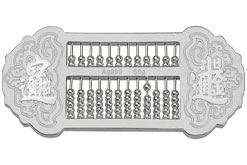

- 时寒冰：美国周期律与新总统战争的必然性
- 时寒冰 2个月前 (09-04)
- 美国大选正在如火如荼地展开。这是有史以来最没有看头的总统竞选，无论共和党推出的特朗普还是民主党推出来的希拉里，与历届参与总统竞选的候选人相比都属于比较弱的。但是，这同时也是有史以来最好看的总统大选，惊人言论层出不穷，是美国历史上与娱乐结合最
共 2751 人阅读，发现 5 个评论


- 神州经济失速可能多大？普通人将受何影响？
- 九龙塘右眼财迷 2个月前 (09-03)
- 上周有不少读者告诉财迷说认同现在不少人稍过自信这个问题，但同时还想问财迷楼市汇市泡泡会不会破，后果有多严重，会不会两脚羊，大洪水之类。财迷不由苦笑，我们不能过度自信，但也不能太过不自信吧。当然，无论太过自信还是不自信，都需要实证数据支撑。根
共 9787 人阅读，发现 15 个评论

- 如松：央行迈不过去的坎是什么？
- 如松 2个月前 (09-02)
- 商业银行2016年中报公布之后，几个数字非常醒目：第一，银行员工总数下降约3.5万人，无论用主动离职还是被动离职来解释，最终的原因都是因为银行的经营局势在恶化所带来的薪酬压力而导致，多家银行出现总薪酬下降是导致员工总数下降的直接原因。首先是
共 5018 人阅读，发现 12 个评论

- 如松：大国围猎之——计谋百出
- 如松 2个月前 (09-01)
- 前两篇文章，读者提出了无数问题，在此解释一下。当今世界面临的最大问题，无疑就是产能过剩，我认为美国人还是直爽的，一直督促老唐去产能，为什么山姆如此“开明”？如此“善意”？因为老唐的产能和美国的重叠度不高，所以，体现出“高姿态”。但是，日欧不
共 4880 人阅读，发现 18 个评论
- 如松：强心针之后改打“窒息针”，会怎么样？
- 如松 2个月前 (08-31)
- 今天是接着昨日的话题。我也不知道医学上是否有窒息针的说法，就当他有吧。一个病人靠强心针维持，如果突然改打窒息针，那一定是去到阎王爷那里去报道，估计没人有异议。当今的世界，三个家伙打过强心针或者正在打强心针，效果各异。2009年开始，伯南克给
共 6483 人阅读，发现 49 个评论
- 如松：国家之间的厮杀，黎明总是静悄悄
- 如松 2个月前 (08-30)
- 今天的文章是以《如松：房价和汇率的唯一真相，哥俩只有一条路》、《如松：房地产幕后的精彩正在上演》为基础的，否则，今天文章的内容不好理解。如今的金融市场非常焦灼，短期的信号有很多矛盾的地方，但欧美日中近年来大肆印钞拯救自身的债务所带来的结局必
共 6698 人阅读，发现 58 个评论

- 耶伦提资产购买的真相
- 柏恩咨询 2个月前 (08-29)
- 今年以来美联储面临一个问题，那就是各国央行由于手头上美元现金变得稀缺，不得不通过抛售美国国债的方式换取美元现金，再通过抛售美金来维护本币的稳定。随着趋势的逐步推进，各国央行抛售美债的力度势必加大，这显然引起了美联储的关注。在本周五的Jack
共 2335 人阅读，发现 2 个评论

- 时寒冰：耶伦亮出美联储的地狱之门
- 时寒冰 2个月前 (08-29)
- 上周五，耶伦在JacksonHole的演讲时，有一个耐人寻味的细节。她说：美联储对联邦基金利率的长期水平表示相当不确定。在2017年底的时候，有70%的概率，联邦基金利率位于0-3.25%区间；2018年底时位于0-4.5%区间。很多人把关
共 2394 人阅读，发现 2 个评论

- 如松：由奢入俭的艰难旅程开始了？
- 如松 2个月前 (08-29)
- 最近，有几个对我们的生活影响非常大的数据发布了，海关总署8月24日发布数据显示:7月玉米进口量同比大降97%，至2.9万吨，6月进口量为6.69万吨，环比也是大幅下跌；1-7月玉米进口同比下降21.91%，为293万吨。7月小麦进口量同比增
共 4779 人阅读，发现 54 个评论
- 如松：黑蝴蝶的两只翅膀在煽动欧洲和亚洲
- 如松 2个月前 (08-28)
- 安哥拉是非洲第三大经济体，安哥拉经济严重依赖石油，石油收入占其国民生产总值的52%、占出口收入的90%。2015年，安哥拉每天的原油产量为178万桶，是继尼日利亚后非洲第二大产油国。自从2014年中原油价格下跌以来，安哥拉就陷入了严重的危机
共 3084 人阅读，发现 6 个评论
- 耶伦打太极，费希尔“急”了眼
- 柏恩咨询 2个月前 (08-27)
- 今夜，全世界都在等在看这个全世界最有影响力之一女人的讲话——珍妮特·耶伦。自从杜德利讲话开始，美元一直处于窄幅震荡的格局，市场非常迷茫，并不确定方向，哪怕费希尔讲话后，也依旧如此，市场都在等待耶伦的确认，从这个角度来说，周五的行情必然会带
共 1743 人阅读，发现 0 个评论
热门文章
好文推荐
更多
- 时寒冰：剖析楼市真相与趋势（万字长文）
- 2016年09月25日
- 写在前面：杜鹃泣血建言，遮掩不了一个民族的伟大光环，多一...

- 时寒冰：剖析中国股市之趋势
- 2016年09月18日
- 剖析中国股市趋势时寒冰关于中国股市，很久没有谈及了。常看...
- 神州经济失速可能多大？普通人将受何影响？
- 2016年09月03日
- 上周有不少读者告诉财迷说认同现在不少人稍过自信这个问题，...

- 如松： 洪水、汇率、黄金，之后哪？
- 2016年07月07日
- 今日以前，湖北、安徽和苏南地区遭遇洪水，虽然这个社会有很...
- 如松：扶桑的游戏
- 2016年02月29日
- 这是作者已经删除的文章！《梁书·扶桑国传》：齐永元元年，...
- 
- 如松：白银算盘
- 2014年06月19日
- 中国历史上的所有重大事件，只要有足够的数据，都可以从货币...